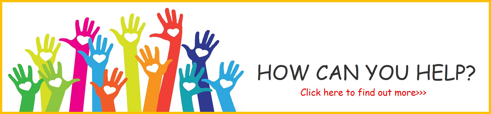

Poverty is a very complicated issue, but feeding a child isn't
The foundation formed three programmes which address the basic needs of a child which are Budimas Home Charity Fund(BHCF), Budimas Food Charity Fund(BFCF), Budimas Education Charity Fund(BECF) where through these strategic programmes, the goal of aiding underprivileged children can be met systematically.
The Budimas Charitable Foundation began by financially supporting 6 homes with 272 children, in the year 2002. Today, the foundation supports over 2,500 children, from 60 homes across Malaysia. 59 of these homes are given financial assistance to help them cope with shortages in their funds for expenses. The foundation also manages and operates one home,Pusat Jagaan Kebajikan Kanak-Kanak Budimas Orion(Budimas Orien Home) which is located in Senawang, Negeri Sembilan. The home can accomodate up to 150 children and equipped with basic necessities. To clothe, feed, educate and provide shelter for these underprivileged and orphaned children, it costs approximately RM15 per child, per day depending on their age. The children of the Orion Home are from ages ranging from 4 o 18 years old.
The Budimas Food Charity Fund was found when a group of the management team lead by Ms Anne Rajasaikaran headed over the Klang and found a few children in school who were malnourished and whose growth was below the average level of a normal child. Upon investigating via the school teachers and a few volunteers who were helping the community, they found out that these children come from families who do not have an income or who earned below RM 1500. Together with assistance of the school principal and teachers, Budimas started feeding the children by providing free food at the school canteen. Response was positive and the school children's attendance soured as they were getting food at school. The teachers later reported that the children under the program focused better and showed vitality thanks to the food that was provided for them. This program was created to ensure that children from poor families who can't afford to have their breakfast will not go to school hungry. The program began in July 2010, with 6 schools in Kapar, Klang involving 350 children. Today, we are supporting more than 6,000 children from 106 public schools across Malaysia.
The Budimas Education Charity Fund aims to provide education opportunities to the less fortune children in Malaysia. From our feeding program, which later expanded to Malacca and Negeri Sembilan, a few school teachers highlighted the plight of the Orang Asli children who had to travel as far as 40 km to get to their school. The team then went on to look for some suitable locations within the Kampung itself to build a library for the community and children to use. The key strategy is to establish educational facilities, such as libraries, in rural and poor villages in our country. One of the objectives of this fuund is to encourage the Orang Asli children to develop their interest toward education. All the libraries are currently being managed by the librarians that the foundation hired. Each library is equipped with 4,000 books and the Orang Asli children were able to read and revise with the reading materials provided. It costs RM180,000 to build a fully functional library in Orang Asli Settlements in the states of Selangor, Kelantan and Pahang in the years to come.
For further information,please click this photo:
